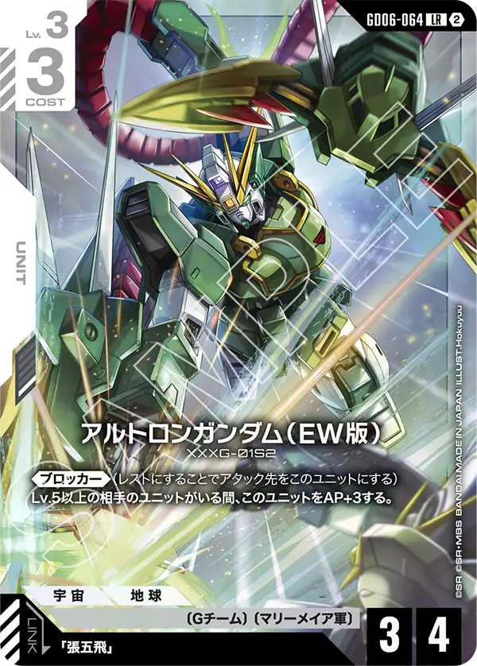
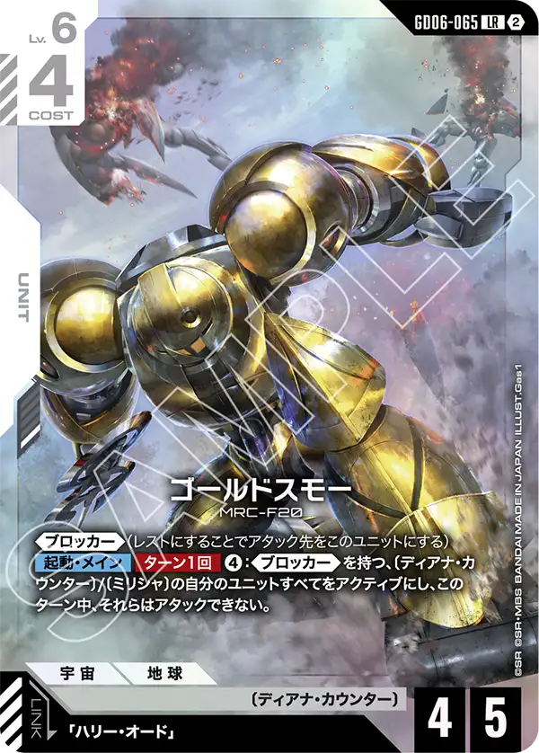
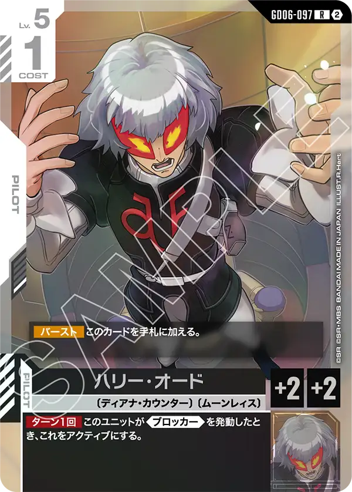
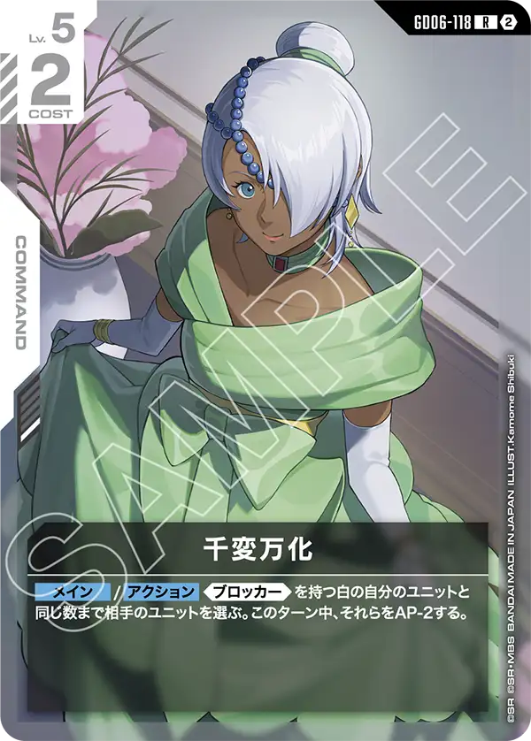

白LRの顔ぶれ
GD06の白LRは2枚。〔Gチーム〕のアルトロンガンダム（EW版）と〔ディアナ・カウンター〕のゴールドスモー。2枚とも《ブロッカー》を持ち、白の守りの型をそのまま押し出した顔ぶれになった。
白の新しい特徴は〔ディアナ・カウンター〕（13枚のうち12枚がGD06）。〔Gチーム〕は23種あり（パラレル版を除く）、GD06でEW版の5機とパイロット2枚が足された。

アルトロンガンダム（EW版） GD06-064
《ブロッカー》(レストにすることでアタック先をこのユニットにする) Lv.5以上の相手のユニットがいる間、このユニットをAP+3する。
《ブロッカー》付きのLv.3が、Lv.5以上の相手ユニットがいる間だけAP6になる。相手が大型を出すほど強くなる小型で、コスト3のまま中盤以降のアタッカーに化ける。
張五飛はGD06-099（Lv.4コスト1・アタック時にLv.5以上の相手ユニット1つをAP-3）とGD01-091の2種がリンクする。GD06-099は〔Gチーム〕〔オペレーション・メテオ〕〔マリーメイア軍〕の3つを持ち、アルトロンの〔マリーメイア軍〕と揃う。〔マリーメイア軍〕は4枚しかなく、GD06ではアルトロン、サーペント（GD06-075）、張五飛の3枚。EW版の〔Gチーム〕はウイングガンダムゼロ（EW版）（GD06-073）、ガンダムデスサイズヘル（EW版）、ガンダムヘビーアームズ改（EW版）、ガンダムサンドロック改（EW版）が同じ弾にいる。
レベル3、コスト3のブロッカーと言う平凡なステータスを持つが、真価はそこでは無い。
レベル5以上の相手ユニットがいるとAPを+3する効果が非常に魅力的である。
レベル5帯はクシャトリヤ[GD01-044]やエールストライクガンダム[ST04-001]、シルヴァ・バレト[GD04-068]がいるなど、強力なカードが出始めるレベル帯でもある。
エールストライクガンダム[ST04-001]には効果で手札に戻されてしまうが、次ターンにリンクさせて攻撃することもできる。
また、リンク先の張五飛[GD06-099]はレベル5以上の相手ユニットとのバトルでは相手のAPを-3させる効果を持つのでAP7までのユニットであれば相打ちにされずにバトルを仕掛ける事ができる。



ゴールドスモー GD06-065
《ブロッカー》(レストにすることでアタック先をこのユニットにする) 【起動・メイン】【ターン1回】④：《ブロッカー》を持つ、〔ディアナ・カウンター〕/〔ミリシャ〕の自分のユニットすべてをアクティブにし、このターン中、それらはアタックできない。
リソース4つで、《ブロッカー》を持つ〔ディアナ・カウンター〕/〔ミリシャ〕の味方をまとめてアクティブに戻す。そのターンはアタックできないので、相手のターンにブロックで使ったユニットを自分のターンに立て直し、もう一度ブロックに回す動きになる。
ハリー・オード（GD06-097・Lv.5コスト1）は《ブロッカー》を発動したときにアクティブに戻る（ターン1回）。起動効果で起こせる《ブロッカー》持ちは、〔ディアナ・カウンター〕がゴールドスモー自身、シルバースモー（GD06-069・回復の起動効果付き）、キャノン・イルフート（GD06-077）と、イーゲル（GD06-070）が出すユニットトークン「ゴッゾー」。〔ミリシャ〕は∀ガンダム（GD04-069）とフラット（ミリシャ仕様）（GD04-077）。ベースのソレイユ（GD06-130）は【配備時】に、パイロットの付いていない相手ユニット1つを、〔ディアナ・カウンター〕/〔ミリシャ〕の味方の数だけそのターンAP-する。
自身もブロッカーを持ち、コストを支払うことでディアナ・カウンターとミリシャのブロッカーを持つユニットすべてをアクティブにできるカード。
コストは非常に重たいが、支払う事ができれば相手から攻撃を受けず、ブロッカーもアタッカーとして運用が可能な攻守一体の動きが可能になる。
リンク先のハリー・オード[GD06-097]も非常に強力でブロッカーを発動したらアクティブになる効果を持つ。
同じユニットが2度もブロックをするのは相手にとって非常に攻撃の手を止める強力な手段になるだろう。
このカードを採用する場合、ブロッカーを多めに採用する形になるため千変万化[GD06-118]の採用も視野に入れていいだろう。


カードの効果文は公式カードリスト（2026年10月16日時点）から転記した。誤りに気づいたらXアカウント（@gcg_stats）のDMで教えてほしい。